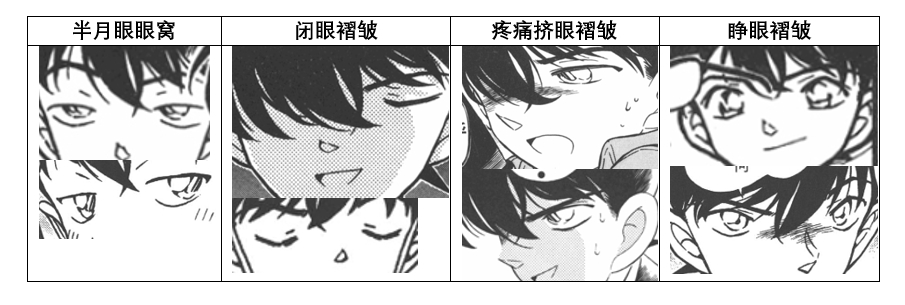
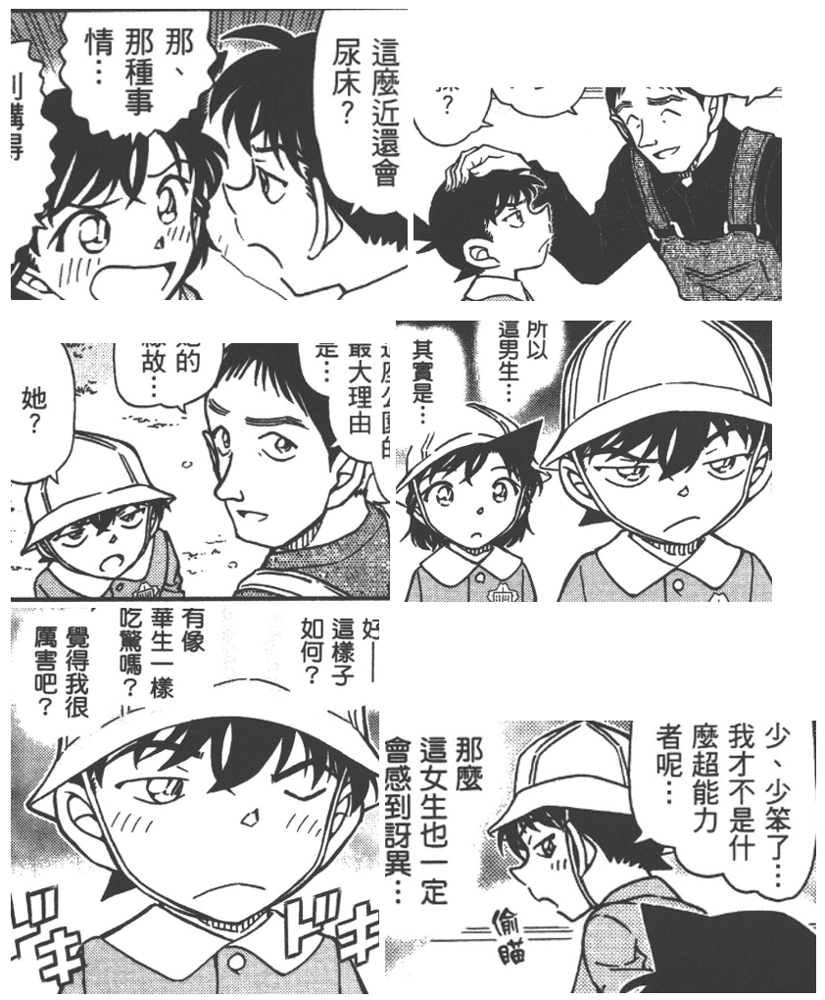

此前关于贝新论，有吧友提出过一种证据：双眼皮褶皱暗示了假新一。在今年名柯30周年展的内容里，青山也提到过这一点。然而对于青山画的眼皮褶皱这件事，一些吧友表示在实锤真新一的眼睛上也出现过褶皱线。
 作为一个会画画的人，我认为双眼皮褶皱和眼窝是两样东西，例如柯南经典表情半月眼上方的弧线就应当算作是眼窝而非双眼皮。当然，不排除青山作画的时候有出现过笔误、没有认真区分单双眼皮。因此，我尝试汇总了（真假）工藤新一出场的所有漫画中的全部145次眼窝与褶皱的图片。产生了惊人发现——
作为一个会画画的人，我认为双眼皮褶皱和眼窝是两样东西，例如柯南经典表情半月眼上方的弧线就应当算作是眼窝而非双眼皮。当然，不排除青山作画的时候有出现过笔误、没有认真区分单双眼皮。因此，我尝试汇总了（真假）工藤新一出场的所有漫画中的全部145次眼窝与褶皱的图片。产生了惊人发现——
先说结论：
1）实锤真新一仅出现过半月眼眼窝、闭眼褶皱、疼痛挤眼褶皱，从未出现过睁眼褶皱；
2）危命篇假柯南、死罗神篇假新一都大量出现睁眼褶皱；
3）服部、基德假扮新一不会出现睁眼褶皱；
4）纽约篇结尾天台新一出现了1次睁眼褶皱，也是原著首次出现“新一“的睁眼褶皱，那么睁眼褶皱极有可能是贝新论伏笔，即纽约篇结尾的天台新一实际上是贝尔摩德。
1）实锤真新一仅出现过半月眼眼窝、闭眼褶皱、疼痛挤眼褶皱，从未出现过睁眼褶皱；
2）危命篇假柯南、死罗神篇假新一都大量出现睁眼褶皱；
3）服部、基德假扮新一不会出现睁眼褶皱；
4）纽约篇结尾天台新一出现了1次睁眼褶皱，也是原著首次出现“新一“的睁眼褶皱，那么睁眼褶皱极有可能是贝新论伏笔，即纽约篇结尾的天台新一实际上是贝尔摩德。
2024-09-16 01:01 | 没字也行:纽约篇开篇，在老妈车上遇见贝姐的时候，新一就有睁眼的褶皱……仔细看一下2024-09-16 01:03 | 晶莹如霏:回复 没字也行 :你可能没有看我下面的详细分析，那个是半月眼眼窝，我在后面全部贴出来了图。半月眼眼窝和睁眼褶皱是两种不同眼睛状态
首先，定义一下本帖区分的四种眼睛状态：

2024-09-15 12:54 | 贴吧用户_Q9D2C5e:我觉得最右侧上下两张应该符合，毕竟这两张的线给我的感觉很突兀，尤其是右一上的右眼那那条，是不是有几个点覆盖掉上眼眶了2024-09-15 13:01 | 晶莹如霏:回复 贴吧用户_Q9D2C5e :右上是危命篇灰原（即使这里原作是个小图也特别明显画了褶皱），右下死罗神篇屋田诚人
然后直接看统计结果：
2024-09-15 16:58 | 卷福花生酱酱酱:好强！
纽约篇结尾天台新一唯一一次睁眼褶皱如下图。恰巧这一幕所对应的台词也曾被吧友指出非常不像早期工藤新一的咄咄逼人的风格。（新一受到麻生诚实案的影响，在名门连续惨死事件时才对服部说出“侦探把犯人逼到尽头，让他们自我了解的话，那和杀人犯有什么两样“这句话）
 漫画中出现了145次工藤新一眼皮线，其中101次是半月眼眼窝，4次是闭眼褶皱，12次是疼痛挤眼褶皱，28次是睁眼褶皱。28次中有27次都是假扮新一（柯南）时出现。那么剩下的一次是否也是假新一呢？
漫画中出现了145次工藤新一眼皮线，其中101次是半月眼眼窝，4次是闭眼褶皱，12次是疼痛挤眼褶皱，28次是睁眼褶皱。28次中有27次都是假扮新一（柯南）时出现。那么剩下的一次是否也是假新一呢？
这样汇总一下就能看出，青山真不是随手画的眼皮线，因此双眼皮褶皱确实是贝新论的一个重要证据。
这样汇总一下就能看出，青山真不是随手画的眼皮线，因此双眼皮褶皱确实是贝新论的一个重要证据。
2024-09-16 15:23 | 贴吧用户_7PX2yAy:这个新一看起来收收的2024-09-20 20:05 | ◆冰封白羽◆:回复 ☞坚硬如水☜ :这眼神是真的很像贝姐的媚眼
接下来按顺序给出细节。以下部分是我手动收集统计的所有包含工藤新一出场篇章中的眼睛褶皱画面。
【1】 Vol1 file1 云霄飞车s人事件（真）
4次半月眼眼窝，0次睁眼褶皱。
【1】 Vol1 file1 云霄飞车s人事件（真）
4次半月眼眼窝，0次睁眼褶皱。
【2】Vol10 file2 外交官s人事件（真）
4次疼痛挤眼褶皱，0次睁眼褶皱。
表示疼痛时柯南和新一部分加了褶皱，除此之外真新一没有眼窝或褶皱。
4次疼痛挤眼褶皱，0次睁眼褶皱。
表示疼痛时柯南和新一部分加了褶皱，除此之外真新一没有眼窝或褶皱。
【3】 Vol21 file4 飞天密室（真）
7次半月眼眼窝，1次闭眼褶皱，0次睁眼褶皱。 在这一篇章漫画中首次出现新一的闭眼褶皱：
7次半月眼眼窝，1次闭眼褶皱，0次睁眼褶皱。 在这一篇章漫画中首次出现新一的闭眼褶皱：
【4】Vol25 file9 危命的复活（真假）
真新一：8次疼痛挤眼褶皱，0次睁眼褶皱。
疼痛状态的真柯南有8次挤眼褶皱。真新一则全部都是纯单眼皮（甚至没有出现过半月眼眼窝）。
真新一：8次疼痛挤眼褶皱，0次睁眼褶皱。
疼痛状态的真柯南有8次挤眼褶皱。真新一则全部都是纯单眼皮（甚至没有出现过半月眼眼窝）。
危命篇的假新一：
0次半月眼燕窝，0次闭眼褶皱，12次睁眼褶皱
小哀假扮的柯南在真新一出场后，不论特写还是小图几乎都多了睁眼状态的眼皮褶皱。这是真假新一（柯南）第一次同框，结合这一篇章中真新一完全没有眼窝和褶皱，可见眼皮褶皱的确是青山刚昌区分真假新一的一个重要细节。
另外，在骑士新一揭露真面目前，假柯南（灰原）也是完全没有画出褶皱的，这说明在青山的表现手法里，有褶皱的人可以部分省略掉不画，而一旦画出至少1次就足以说明是有褶皱的假人。
0次半月眼燕窝，0次闭眼褶皱，12次睁眼褶皱
小哀假扮的柯南在真新一出场后，不论特写还是小图几乎都多了睁眼状态的眼皮褶皱。这是真假新一（柯南）第一次同框，结合这一篇章中真新一完全没有眼窝和褶皱，可见眼皮褶皱的确是青山刚昌区分真假新一的一个重要细节。
另外，在骑士新一揭露真面目前，假柯南（灰原）也是完全没有画出褶皱的，这说明在青山的表现手法里，有褶皱的人可以部分省略掉不画，而一旦画出至少1次就足以说明是有褶皱的假人。
2024-09-15 17:03 | 卷福花生酱酱酱:最后一段很锤，没揭露前不给柯南画褶皱。2024-09-15 17:55 | 晶莹如霏:回复 卷福花生酱酱酱 :没错没错！我就是这个意思。还有一个脑洞大开的猜测，纽约篇天台新一最后唯一出现了一次褶皱，可能就是因为那句台词真正暴露了他的贝姐身份。例如吧友之前猜测的，这句话可能是用冷漠女声说的用来震慑srm2024-09-15 18:18 | 卷福花生酱酱酱:回复 晶莹如霏 :合理！论换头，贝姐的技术绝对是一等一，最后转头暴露酒气震慑srm，才露出真面目（褶皱）。

【5】Vol34 file11 纽约篇（待定）
除去最后天台新一部分：10次半月眼眼窝。
除去最后天台新一部分：10次半月眼眼窝。
2024-09-16 01:10 | 没字也行:还要区分半月眼的情况来定这眼线是不是线索，是太随性了。毕竟表达角色情绪的优先级应该在埋钉子之上。2024-09-16 01:16 | 没字也行:纽约篇几乎全篇都在回忆中展开，这里的新一在兰神的记忆里产生了模糊的印象，也不失为一个解释的方向。在新一遇到贝姐之后，新一就已经开始形象模糊了2024-09-16 01:17 | 晶莹如霏:回复 没字也行 :半月眼的标准画法是眼珠上半遮蔽，呈现下半圆的形状；普通睁眼的眼珠是圆形的。这一点在漫画技法上有着严格的区别，不属于随性的划分。2024-09-16 01:17 | 晶莹如霏:回复 没字也行 :对于你说的半月眼是情绪需要，这点我认可，所以我的观点等同于：无语情绪下的半月眼无法判断伪装，但是真诚情绪下的睁眼一旦出现双眼皮必然是假新一。归纳目前漫画所有登场工藤新一的证据，暂时还无法证伪我这一观点。所以贝新论或许存在一定可能2024-09-16 01:20 | 晶莹如霏:回复 没字也行 :关于兰记忆错乱，我倾向于认为纽约篇是兰主观和客观叙事都有。兰回忆里深刻一幕是“救人不需要理由”，而双眼皮的出现恰好是下一幕，此时兰已经晕了，这个双眼皮是客观叙事的可能性很大
而在纽约篇的结尾：
天台新一对峙银发srm，只有当天台新一说台词“我现在无法逮捕你，所以我当作无事发生”时，新一加了睁眼褶皱，且不是半月眼是睁眼！ 结合这一篇章前半部分显著增多了半月眼眼窝的出现频率，可能为的就是让贝姐假扮的新一的睁眼褶皱显得不那么突兀。
天台新一对峙银发srm，只有当天台新一说台词“我现在无法逮捕你，所以我当作无事发生”时，新一加了睁眼褶皱，且不是半月眼是睁眼！ 结合这一篇章前半部分显著增多了半月眼眼窝的出现频率，可能为的就是让贝姐假扮的新一的睁眼褶皱显得不那么突兀。
【6】Vol42 file5 满月篇（假）
服部平次假扮新一没有睁眼褶皱，仅1次半月眼眼窝。
服部平次假扮新一没有睁眼褶皱，仅1次半月眼眼窝。
【7】Vol50 file8 服部平次vs工藤新一 滑雪场的推理对决（真）
1次半月眼眼窝， 0次睁眼褶皱。
1次半月眼眼窝， 0次睁眼褶皱。
【8】Vol55 file6 工藤新一少年冒险（真）
13次半月眼眼窝， 0次睁眼褶皱。
这一篇章半月眼眼窝显著增多，但无一例外都是半月眼。
作为纽约篇后工藤新一登场的篇章，同样是半月眼，从这一篇章起眼窝比纽约篇前多了很多。这或许是纽约篇贝新论后青山刚昌在作画细节上的一个改变——刻意增加新一眼部褶皱的数量，但是仅限半月眼。
13次半月眼眼窝， 0次睁眼褶皱。
这一篇章半月眼眼窝显著增多，但无一例外都是半月眼。
作为纽约篇后工藤新一登场的篇章，同样是半月眼，从这一篇章起眼窝比纽约篇前多了很多。这或许是纽约篇贝新论后青山刚昌在作画细节上的一个改变——刻意增加新一眼部褶皱的数量，但是仅限半月眼。
【9】Vol62 file5 死罗神篇（真假）
真新一： 6次半月眼眼窝， 0次睁眼褶皱。
真新一： 6次半月眼眼窝， 0次睁眼褶皱。
死罗神篇的假新一：0次半月眼眼窝，0次闭眼褶皱，15次睁眼褶皱。
屋田诚人扮演的假新一出现了非常多的睁眼褶皱！
危命篇和死罗神篇一前一后共同暗示了假新一（柯南）会出现睁眼褶皱！那么夹在中间的纽约篇仅出现一次的睁眼褶皱有什么含义呢？
屋田诚人扮演的假新一出现了非常多的睁眼褶皱！
危命篇和死罗神篇一前一后共同暗示了假新一（柯南）会出现睁眼褶皱！那么夹在中间的纽约篇仅出现一次的睁眼褶皱有什么含义呢？
【10】Vol71 file3 伦敦篇（真）
4次半月眼眼窝，0次睁眼褶皱。
4次半月眼眼窝，0次睁眼褶皱。
【11】Vol83 file10 水族馆篇（真）
11次半月眼眼窝，1次闭眼褶皱，0次睁眼褶皱。
11次半月眼眼窝，1次闭眼褶皱，0次睁眼褶皱。
【12】Vol87 file6 樱花班的回忆（真）
27次半月眼眼窝（眼窝太多了截图累晕hhh），1次闭眼褶皱， 0次睁眼褶皱。
27次半月眼眼窝（眼窝太多了截图累晕hhh），1次闭眼褶皱， 0次睁眼褶皱。

2024-09-19 10:14 | 一颗芦荟草🌙:这么看来樱花班小新一几乎全程半月眼啊2024-09-19 12:08 | 晶莹如霏:回复 一颗芦荟草🌙 :和性格有关，新一小时候太臭p小孩了，就总是半月眼


【13】Vol92 file2 涟漪篇（真）
5次半月眼眼窝， 0次睁眼褶皱。
5次半月眼眼窝， 0次睁眼褶皱。
【14】Vol94 file8 红修篇（真）
8次半月眼眼窝，1次闭眼褶皱，0次睁眼褶皱。
8次半月眼眼窝，1次闭眼褶皱，0次睁眼褶皱。
【15】File1119 怪盗基德vs白马探（假）
怪盗基德假扮工藤新一没有出现睁眼褶皱，仅出现4次半月眼眼窝。
怪盗基德假扮工藤新一没有出现睁眼褶皱，仅出现4次半月眼眼窝。
后排支持统计。
不过，既然基德/服部没有眼线，而屋田诚人/小哀有，那就已经无法得出“假新一有眼线”的结论了，显然有的假新一救没有眼线。
且既然屋田和小哀大量出现，那么为何所谓贝新论只有一次呢？这种数据，反而是统计上应该剔除的。
不过，既然基德/服部没有眼线，而屋田诚人/小哀有，那就已经无法得出“假新一有眼线”的结论了，显然有的假新一救没有眼线。
且既然屋田和小哀大量出现，那么为何所谓贝新论只有一次呢？这种数据，反而是统计上应该剔除的。
2024-09-15 12:04 | 晶莹如霏:有眼线是假新一的充分不必要条件，目前统计结果看，只要有了假眼线就一定是假新一。还有我在10楼说了，有眼线的假柯南可以在有的部分忽略不画，一旦画了1次就说明铁有眼线2024-09-15 12:04 | 晶莹如霏:基德没有眼线是因为他本就长得和新一一样不需要批皮，服部没有眼线也是因为他本就是单眼皮。而灰原是双眼皮，整容前屋田本也画出过疑似双眼皮2024-09-15 12:11 | 雪者风形:主要问题是73作出过回应吧，而且假设背心成立就是至今未揭开的谜题了，自然不可能像是当场揭秘的部分一样大量重复使用同一暗示2024-09-15 12:12 | 雪者风形:回复 雪者风形 :（其他这几个内容，这个双眼皮是不必要的暗示（破案本身没有用到这个点），所以更多是为了让人注意到这个问题，而真正需要这个点的就只需要一次）2024-09-15 12:13 | 晶莹如霏:贝新论只有一次确实是少数数据，不过我认为这不是误差数据，而是青山故意画的。为什么他只画一个呢？原因可能是：①这是小兰的回忆视角，记忆模糊；②这是原作首次出现新一双眼皮，为了不要太引人注意就只悄悄画了一次；③青山在给自己留退路，贝新论伏笔未来也许不会收回了2024-09-15 12:15 | 雪者风形:回复 🌐之徙 :不过，这个思路我个人认为是合理的，也可以整理屋田和哀的两个场景中睁眼+无眼线的量，如果反而没有或很少而纽约天台有很多，可能是一个相对有效的反驳了。2024-09-15 12:25 | 🌐之徙:回复 晶莹如霏 :这并不是小兰的回忆，当时小兰已经晕了，这是上帝视角回忆，所以不存在因为小兰回忆所以模糊的问题。2024-09-15 12:26 | 🌐之徙:回复 晶莹如霏 :且，如果是真新一，则此时新一是迫于客观压力，在说违心的话，那么虽然看似安慰杀人魔，实则有些皱眉的情况，是否也要考虑进去呢？眼线并不只导致贝新论，也有很多其他的可能。2024-09-15 12:28 | 晶莹如霏:回复 🌐之徙 :你说的也有道理。如果是上帝视角那么这个双眼皮肯定就是伏笔没跑了。回不回收伏笔就要看青山想怎么结尾了。 说到这儿我反而觉得拆sr用万物起源纽约篇非常合适(2024-09-15 12:30 | 晶莹如霏:回复 🌐之徙 :因为我统计了所有其他篇章的新一，28次双眼皮中27次都是假新一，没有出现过你说的这种情况。当然不排除纽约篇首次出现了违心皱眉这种可能，只是我觉得这样的概率很小2024-09-15 12:34 | 🌐之徙:回复 晶莹如霏 :那是因为你把其他的双眼皮都视为眼睛形状不一样从而排除出统计，从而才得出这28个样本，小哀和屋田的样本都是大量，如果青山当时创作时真的有这个心思，那纽约篇一定也是大量才对。2024-09-15 12:35 | 🌐之徙:回复 晶莹如霏 :而且我觉得，不宜高估青山在设计这些小细节的精度，青山有精细的部分，但并非都很精细，新出的眼镜就是例子。2024-09-15 12:40 | 晶莹如霏:回复 🌐之徙 :我觉得青山就是故意留了活口，让纽约篇可以有两种不同的发展，且都有迹可循。现在也没有锤当时杀人魔一定是贝姐，也没有锤新一一定是贝姐。我认为这关乎结局sr还是ca，而结局之前一切都只是说存在这种可能性啦2024-09-15 12:43 | 晶莹如霏:回复 🌐之徙 :因为我是学画画的所以会对于眼皮的表现有自己的看法。我的这个分法从漫画创作的学理角度应该没什么问题。而且其他眼皮按照我这个分四类每一类都有大量证据，并没有样本被孤立划分为一种类别2024-09-15 12:47 | 晶莹如霏:回复 🌐之徙 :感谢提醒，新出眼镜我不知道，这就去了解一下！但我还是想说，青山在假新一的眼皮上应该是精细的，否则他不会在30周年展上刻意强调（本帖的第二张图）2024-09-15 17:35 | mangomengke07:结论不是假新一有，而是真新一没有……2024-09-23 23:59 | 颜馨酱℃:回复 🌐之徙 :因为是小兰回忆，认定了那就是真新一吧。所以前半段是完全不存在的。但是在小兰晕过去后，转为上帝视角继续进行叙述。才将双眼皮暴露出来。
关于回复24楼的屋田诚人整容前疑似双眼皮（因为屋田全程闭眼只能说是疑似，也许是闭眼褶皱.....

2024-09-15 17:36 | mangomengke07:说明整容前是双眼皮
大工程啊
很细
太好了赶上直播了，一直想听听会画画的人对73 画法差异的讲解，楼主辛苦
妈呀好厉害
贝新论解释不了为什么贝姐会对工藤同样保佑好感的。特别是这最后一幕说的话如果是贝姐说的那这剧情根本说不通
2024-09-15 13:12 | 晶莹如霏:是这样的。所以这个论点还有很多不完善的地方，需要读者继续挖掘或者需要青山打补丁。我只是从眼皮这个角度说明贝新论是有可能实现的2024-09-15 20:15 | 数码特摄♬:不过b站确实有up从a药角度的出发，可以可以相对合理地解释贝姐对柯南和灰原的态度，但整个逻辑链和故事线跟小兰无法搭上，所以贝姐对小兰的态度还是没法解释2024-09-19 10:23 | 一颗芦荟草🌙:回复 数码特摄♬ :也有可能是小兰不顾自身安危救下srm让她被触动了，毕竟从她之前的话“天使从来不对我微笑”可以推测她之前或许从来没见过小兰这种人，很纯粹的善良，以及之前看到的分析说如果贝新论成立，那句话可能是被小兰复述触动贝姐也有可能。不过这些确实目前都只是推测2024-10-30 03:32 | 梦梦-2017:也能解释，就是小兰记忆出错，她记忆里的新一一部分是新一本人，另一部分是假新一。贝姐假扮的砂仁沫也真的被小兰和新一救过，但是被小兰的记忆误差模糊了贝姐版假新一和砂仁沫的时间线


能理解24楼的意思是之前的扮演假新一的人都出现了体现本人特征的样本，但纽约篇新一眼皮时单时双，只有一处画了双眼皮，所以不能做完全有效的论据。而且35卷出来是还没有公布Sharen魔的身份，但73有特意画出纤细的脚踝来暗示她是女性，在42卷纽约篇回收掉揭示身份为贝姐，给她当时犹豫不杀小兰护着的哀哀的理由。这样感觉创作思路上没什么问题，纽约篇奇怪的点是消失的伞和黑白楼梯，可能确实有隐藏剧情就是了。
2024-09-15 13:28 | 晶莹如霏:后半部分认同。你说的前半部分“时而有时而无双眼皮所以不能作为论据”我不认同，因为如果要给这个伏笔肯定不会每一个都画（危命篇和死罗神篇也不是全都画了），何况这里只是一个没有成型的伏笔2024-09-16 09:04 | 🌐之徙:黑白楼梯没问题，本来就是两个楼梯，一个在秀一这一面，另一个白楼梯在楼背面2024-09-16 11:28 | 贴吧用户_ae1DeVJ:黑白楼梯没问题，挂着小兰手帕的楼梯在楼的正面，即小兰新一进入的门这一边。小兰遇见杀人魔是在楼的背面。2024-09-16 23:48 | happy高宏远:回复 🌐之徙 :那就是说她们仨都走到楼背面了嘛，新一和小兰看到地上有血，就去都去楼背面白楼梯那边，遇到Sharen魔，可后面又说新一回收了手帕不知道放哪儿去了，那感觉新一在黑楼梯这边的故事线是有操作空间的。2024-09-17 00:04 | happy高宏远:回复 贴吧用户_ae1DeVJ :是，所以新一的动线有点点奇怪，后面他在电话里说回收了手帕，且后续的案件信息是上网查的，意思是他没回过现场，小兰昏了应该也不至于抱着她又去黑楼梯那儿捡手帕。正常来说他开卷帘门，发现血迹，直接去白楼梯那边追Sharen魔才对，不知道他啥时候去的黑楼梯。2024-09-17 01:23 | 贴吧用户_ae1DeVJ:回复 happy高宏远 :是的，他的行动非常奇怪，他跟杀人魔进入大楼的顺序有很大的问题。如果是他进去以后发现血迹追到大楼背后，应该是他追着杀人魔往上跑，就像小兰往上爬。但是漫画里他是追着杀人魔往下跑，说明他比杀人魔早到大楼背后。他明明只是去大楼前侧的楼梯捡手帕，为什么要去背后？
很多人评论贝新论的缺陷，其实我觉得青山就是故意留了活口，让纽约篇可以有两种不同的发展，且都一定程度上有迹可循。 现在不能说锤srm一定是贝姐（后面贝姐回忆是在和琴酒打电话时，她也可能由于自己的一些目的对琴酒撒谎），更没有锤新一是贝姐。我认为纽约篇的真相这关乎结局青山想写sr还是ca，甚至可以说现在看来两边都是可以圆下去的。而结局之前一切都只是说存在这种可能性啦
2024-09-16 09:03 | 🌐之徙:我认为即使纽约篇贝魔，也丝毫不影响柯哀结局，小兰喜欢新一的理由本就是错的，新一当时被迫放过杀人魔是客观导致，小兰却主观以为新一为了救她可以抛弃原则。2024-09-16 09:23 | 晶莹如霏:回复 🌐之徙 :我认可你说的贝魔论也可以圆回来。我没讨论结局感情戏，比起结局是谁我更在意天台新一双眼皮的真相。所以在探讨贝新论可能性啦
大工程不白看 顶了支持下
虽然镇楼图有褶皱，但镇楼图怎么说呢，还挺帅
大工程啊，顶一下
顶顶顶！不过我要补充一个，就是眼窝和双眼皮不是同一种构造，所以从画法上也很好区分。眼窝根据骨头构造和眼球凸出部分，画的时候会顺着轮廓，和上眼睑平行距离会呈现“↗”（左眼）or“↖”（右眼）的走势。而双眼皮的线条走势会卡着眼角
把这些整理出来辛苦了
好严谨。顶顶
辛苦了，致敬🫡
膜了，没想到真的有人做了这事
辛苦辛苦！dddddd
太强了，🆙
太硬核了，应该发到米花吧
突然想到另一个脑洞大开的猜测。
已知：危命篇的假柯南（灰原扮）是在真骑士新一揭露真面目之后，青山才开始给假柯南画双眼皮。
那么：纽约篇天台新一最后才出现双眼皮，是否是因为对应那句台词真正揭露了他的贝姐身份？此时兰已经半梦不醒，天台新一这句话如果是用冷静女声说的，这也与之前兰的错乱回忆中的冷静女声吻合。至于这样做的原因，之前看到有吧友推测，天台新一用女声来震慑举起枪的srm。 事实上，原作的后一格确实是srm震惊的表情，对此有两种可能的解释：①贝魔论-srm贝姐对新一的高光台词感到震惊；②贝新论-srm对天台新一发出女声感到震惊.
已知：危命篇的假柯南（灰原扮）是在真骑士新一揭露真面目之后，青山才开始给假柯南画双眼皮。
那么：纽约篇天台新一最后才出现双眼皮，是否是因为对应那句台词真正揭露了他的贝姐身份？此时兰已经半梦不醒，天台新一这句话如果是用冷静女声说的，这也与之前兰的错乱回忆中的冷静女声吻合。至于这样做的原因，之前看到有吧友推测，天台新一用女声来震慑举起枪的srm。 事实上，原作的后一格确实是srm震惊的表情，对此有两种可能的解释：①贝魔论-srm贝姐对新一的高光台词感到震惊；②贝新论-srm对天台新一发出女声感到震惊.
2024-09-16 08:59 | 🌐之徙:这个不成立吧，假柯南双眼皮我记得很多的2024-09-16 09:01 | 🌐之徙:还有就是这个根本不是什么女声，是话外音，也就是并非画面中的人发出的声音，同样的粗黑框也适用于柯南把昏迷的小兰唤醒。2024-09-16 09:11 | 晶莹如霏:回复 🌐之徙 :是很多，但是全部都出现在骑士新一摘下面具之后。这个细节我扣过，你也可以去前面危命篇那层楼看，我都截图了2024-09-16 09:15 | 晶莹如霏:回复 🌐之徙 :我不是说那些话是女声说的。我意思是，兰回忆里的沉着冷静女声，在纽约天台（这里的配图）的哪里体现出来了吗？fbi赤井→凶狠的男声，新一→少年，杀人魔→一共说了两次话第一次是为啥救我，第二次是疯疯癫癫见上帝。这三人谁和沉着冷静女声有关呢2024-09-16 09:19 | 晶莹如霏:回复 🌐之徙 :所以只有可能这个声音是莎朗，即贝姐在纽约天台有用自己本音说过话。一种情况是贝魔论，srm用了女声；一种情况就是贝新论，新一用了女声。假如是后者，新一就是从双眼皮这一格开始用女声的，因为双眼皮在危命篇意味着暴露，这里同理，逻辑闭环2024-09-16 10:58 | 🌐之徙:回复 晶莹如霏 :这个声音是回忆的之前莎朗对小兰说的话啊2024-09-16 10:59 | 晶莹如霏:又不是天台回忆
回复 🌐之徙 :不绝对吧。那一句话的下一格回忆场景都是天台2024-09-16 11:06 | 🌐之徙:回复 晶莹如霏 :我看了下，小哀的镜头非常少，又有眼镜和刘海，有几处我怀疑只是图像不够高清或者被镜框遮住，之后揭露身份，小哀很多又是半月眼的线，睁大眼睛那张图也没线。2024-09-16 11:07 | 🌐之徙:回复 晶莹如霏 :尤其新一揭露身份时，小哀完全是皱眉的状态，线自然就很明显，这应该和“揭露身份才有线”毫无关系，就是在画皱眉而已2024-09-16 11:09 | 🌐之徙:回复 晶莹如霏 :贝姐是真的有对小兰说过“真的有上帝吗”的，所以小兰也就一定是回忆里贝姐在说，而且是莎朗而非新一，对话框的加粗代表这些话都不是新一说的2024-09-16 11:10 | 🌐之徙:回复 晶莹如霏 :危命小哀也是这样，有加粗对话框描述小哀的内心独白，但画面里却没有小哀，这就是话外音。2024-09-16 11:38 | 晶莹如霏:回复 🌐之徙 :有道理，学到了
接着45楼说，小兰对于纽约天台楼梯的回忆部分有一个很大的bug就是“冷静沉着的女声”。
在纽约篇天台，srm出现后一共只说过两次话（下图），srm表情怎么看都不像是冷静沉着的样子。 反而是新一这里出现眼皮后的两段话更适合用“冷静沉着”来形容： 所以可以猜测，从双眼皮新一这一格漫画，他开始使用女人声音说话（甚至散发出浓浓酒气），从而震慑住了srm导致了下一格漫画srm的震惊；同时小兰这时已经昏睡，她对于冷静女声的记忆，就像纽约开篇兰的回忆里那样是模糊的。
如果上述贝新论属实，我还有一个不成熟的补丁猜测。天台新一公主抱着小兰下楼梯的过程中两人应该有对话，此时意识不清的兰基于贝姐用女声恐吓srm这一情况 询问了他是不是莎朗（因为纽约篇有莎朗掀脸皮，兰是知道莎朗会易容术的），莎朗承认并说“你就是存在于我身边的天使”，这就与最后莎朗有希子的电话对应起来了。 但是为什么小兰认为天台新一是她开始初恋的时刻呢？很可能她对于纽约天台的记忆是乱的，她不记得自己意识不清被抱下楼的事了。
那么小兰记不记得纽约天使梗呢？如果不算35卷纽约篇的以上潜在补丁，原作中贝姐第一次喊小兰angel应该是在42卷满月篇，而非常巧合的是这时的小兰也是刚扑倒灰原的半昏迷状态！！兰每次和贝姐的对手戏都以昏迷告终，但是，可以确定的是她知道贝姐叫她angel，因为天使梗这一点在90卷的假小梓身上回收了。 这里最后兰直接问了小梓，看似是call back满月篇，但是小梓的这句“我应该说过”是什么时候说的呢？会不会就是纽约篇公主抱下楼的时候，只是小兰忘记了呢？
——所以是否有可能假小梓是在call back纽约篇的贝新论呢
在纽约篇天台，srm出现后一共只说过两次话（下图），srm表情怎么看都不像是冷静沉着的样子。 反而是新一这里出现眼皮后的两段话更适合用“冷静沉着”来形容： 所以可以猜测，从双眼皮新一这一格漫画，他开始使用女人声音说话（甚至散发出浓浓酒气），从而震慑住了srm导致了下一格漫画srm的震惊；同时小兰这时已经昏睡，她对于冷静女声的记忆，就像纽约开篇兰的回忆里那样是模糊的。
如果上述贝新论属实，我还有一个不成熟的补丁猜测。天台新一公主抱着小兰下楼梯的过程中两人应该有对话，此时意识不清的兰基于贝姐用女声恐吓srm这一情况 询问了他是不是莎朗（因为纽约篇有莎朗掀脸皮，兰是知道莎朗会易容术的），莎朗承认并说“你就是存在于我身边的天使”，这就与最后莎朗有希子的电话对应起来了。 但是为什么小兰认为天台新一是她开始初恋的时刻呢？很可能她对于纽约天台的记忆是乱的，她不记得自己意识不清被抱下楼的事了。
那么小兰记不记得纽约天使梗呢？如果不算35卷纽约篇的以上潜在补丁，原作中贝姐第一次喊小兰angel应该是在42卷满月篇，而非常巧合的是这时的小兰也是刚扑倒灰原的半昏迷状态！！兰每次和贝姐的对手戏都以昏迷告终，但是，可以确定的是她知道贝姐叫她angel，因为天使梗这一点在90卷的假小梓身上回收了。 这里最后兰直接问了小梓，看似是call back满月篇，但是小梓的这句“我应该说过”是什么时候说的呢？会不会就是纽约篇公主抱下楼的时候，只是小兰忘记了呢？
——所以是否有可能假小梓是在call back纽约篇的贝新论呢
2024-09-17 08:32 | 鲍尔康斯卡娅💖:但是这句话也有可能类似优作的我没有说过吗2024-09-20 12:48 | mangomengke07:不得不嗑贝兰了
接着46楼说。有没有一种可能，满月篇结尾的小兰突然出现这个一直以来被诟病已久的情节，其实是为了和纽约篇结尾配套——两个篇章的共同点：①都确定有贝姐小兰正面交锋；②小兰都昏迷不清了。
假小梓这里的表情更是和纽约天台新一一摸一样（之前有吧友对比过），这里假小梓被兰戳穿很有可能是在暗示纽约天台贝新论。
——————以下暴论————————
如果纽约篇的下楼梯剧情里，莎朗真的对兰亮明了身份、只不过兰后续忘记了，再结合满月篇的贝姐追杀小哀，我暴论一个最后兰知道黑组主线是通过回忆起纽约篇和满月篇的贝姐，然后再直接因为纽约贝新论掐了sr感情线，那就可以完结了（x
假小梓这里的表情更是和纽约天台新一一摸一样（之前有吧友对比过），这里假小梓被兰戳穿很有可能是在暗示纽约天台贝新论。
——————以下暴论————————
如果纽约篇的下楼梯剧情里，莎朗真的对兰亮明了身份、只不过兰后续忘记了，再结合满月篇的贝姐追杀小哀，我暴论一个最后兰知道黑组主线是通过回忆起纽约篇和满月篇的贝姐，然后再直接因为纽约贝新论掐了sr感情线，那就可以完结了（x
接着47楼说，
已知：①满月篇：一个漂亮女人对兰说move it angle，但兰不知道她身份；②纽约篇：兰对莎朗说“天使就在你身边”，且兰知道莎朗会易容。
→ 得出结论：这个说天使梗的小梓是易容之后的漂亮女人。
如果只有满月篇铺垫，按理说小兰直接认为小梓是另一个长相的女人，这是否有点突兀？所以还是应该把纽约篇的记忆碎片也算进来。而目前看来纽约篇中并没有体现小兰和莎朗的那句对话。用排除法，那句对话只有可能出现在天台下楼梯时。因此贝新论成立。
（对于贝新论的剧情方面的细节推理我也有点拿不准，欢迎吧友抓虫）
已知：①满月篇：一个漂亮女人对兰说move it angle，但兰不知道她身份；②纽约篇：兰对莎朗说“天使就在你身边”，且兰知道莎朗会易容。
→ 得出结论：这个说天使梗的小梓是易容之后的漂亮女人。
如果只有满月篇铺垫，按理说小兰直接认为小梓是另一个长相的女人，这是否有点突兀？所以还是应该把纽约篇的记忆碎片也算进来。而目前看来纽约篇中并没有体现小兰和莎朗的那句对话。用排除法，那句对话只有可能出现在天台下楼梯时。因此贝新论成立。
（对于贝新论的剧情方面的细节推理我也有点拿不准，欢迎吧友抓虫）
2024-09-16 08:57 | 🌐之徙:这肯定是不行的，小梓说的是“angel”，有希子转述时大概率是日语吧，有没有转述都不知道。小兰听到英文angel，当然只能想到满月篇2024-09-16 09:06 | 晶莹如霏:回复 🌐之徙 :我的意思是莎朗有希子电话说到了天使这个事，证明可能纽约篇里莎朗和兰有关于天使的对话。然而作者没画出来，所以只是猜测了。有希子可能没转达，兰也可能昏迷忘了2024-09-16 09:09 | 晶莹如霏:回复 🌐之徙 :如果只联想到满月篇，小兰视角就是满月那个女人易容成了小梓。小兰只见识过一次易容术揭脸：纽约篇的莎朗。所以会不会这里有暗示兰潜意识里知道莎朗也和天使相关呢（只是我的猜测，我也觉得证据太少hhh）2024-09-16 09:10 | 🌐之徙:回复 晶莹如霏 :小兰还知道基德呢，这世界上有易容术是众所周知的事情2024-09-16 09:10 | 🌐之徙:回复 晶莹如霏 :而且理论上小兰还会知道“克莉丝温亚德”也会易容
哇！好详细直观！！给楼主点赞 不过我感觉这样一对比纽约篇只有一次，而且此时新一是回眸且眉毛一高一低，这种表情很刁钻我怕是挤压型褶皱，所以看完我反而更倾向是真新一
不过我感觉这样一对比纽约篇只有一次，而且此时新一是回眸且眉毛一高一低，这种表情很刁钻我怕是挤压型褶皱，所以看完我反而更倾向是真新一
不过我感觉这样一对比纽约篇只有一次，而且此时新一是回眸且眉毛一高一低，这种表情很刁钻我怕是挤压型褶皱，所以看完我反而更倾向是真新一2024-09-15 22:28 | 晶莹如霏:挤压型褶皱的上眼睑是平的（比如我详细列举的外交官事件），纽约天台新一的上眼睑是正常圆弧。而原作中真新一的正常圆弧眼从未出现过褶皱2024-09-15 22:29 | 晶莹如霏:还有，眉毛一高一低的情况下即使出现挤压，也只会有一只眼睛挤压。这里两只眼睛都画了褶皱
要说怀疑纽约篇新一的身份，那不在场的会易容术的都有嫌疑，有希子也不是完全没可能，就算她们仨楼梯那块儿身份都是对的，纽约篇隐藏剧情还有：贝兰“天使在我身边”的话啥时候说的，小兰回忆里秀一为啥是短发，新一靠门口的伞怎么没了，楼梯为啥时黑时白，贝姐满月为啥说“早知道那时候就杀了赤井”，好像她有那个机会似的，而且M26里那个人脸识别显示一年前宫野姐妹也在纽约。金苹果系列编号到5，谁知道还有没有678910……
2024-09-15 20:56 | 晶莹如霏:黑白楼梯是楼的两侧，分别有两个楼梯，从小兰一进门看到地上血迹再抬头往前走，这个分镜，可以看出来。她其实去了楼背侧的楼梯2024-09-15 20:58 | 晶莹如霏:m26哪里看出宫野姐妹一年前在纽约呀2024-09-15 21:03 | happy高宏远:回复 晶莹如霏 :人脸识别有一张宫野姐妹逛街的照片，然后旁边地点信息隐隐约约显示的是：NewYork2024-09-15 21:14 | 晶莹如霏:回复 happy高宏远 :我去看了没有诶，而且那个画面之前选择监控数据的国家选的也是日本（评论回复不能贴图，我新盖了一楼发图）2024-10-30 03:38 | 梦梦-2017:有可能是小兰记忆出了差错，把和新一一起遇到并救下贝姐假扮的srm，以及和贝姐假扮的新一一起遇到真srm的时间线融合了
cy
楼里有吧友说m26里宫野姐妹一年前到访纽约，感觉应该是假的？我去看了下图没有表现出纽约..吧
2024-09-15 21:55 | happy高宏远:不是这里，是25分钟左右贝姐拿U盘不是出来的左边雪莉右边哀哀的图嘛，左边就是截的逛街的这个头像，旁边有一些模糊的信息，去年有人照着场刊还是剧照解码出来有Newyork。2024-09-15 22:00 | 晶莹如霏:回复 happy高宏远 :我看了那一幕，第二行字的外形有点像。但是这张图就是我发的那一张，前一幕显示的仅勾选了日本监控摄像头数据，怎么会出现美国街头呢0.02024-09-22 12:01 | 启光mzt:这个地方确实有问题。不过感觉搞不好一年前宫野姐妹真的在纽约。贝姐如何确信一个普通的杀人魔能够引出赤井？如果宫野姐妹就在纽约，而贝姐通过某种方式让赤井认为杀人魔会对她们下手，就有可能被引出来了。2024-09-25 11:55 | 雪者风形:回复 启光mzt :上叙视角一下，以“一切为艺术效果服务”的思路，能拉来的人肯定要拉来（）但凡有这个可能性而没有直接被硬性卡住，这件事就更可能发生。
顶
支持lz
青山中期画功很好的，画人物神态更是一向到位，天台新一不只是双眼皮的问题，那个新一的神态就带了一股娇媚和柔软，早期的新一其实挺轴挺楞的，不会露出那种成熟的表情
青山中期画功很好的，画人物神态更是一向到位，天台新一不只是双眼皮的问题，那个新一的神态就带了一股娇媚和柔软，早期的新一其实挺轴挺楞的，不会露出那种成熟的表情
2024-09-16 23:34 | 晶莹如霏:真的违和感很强！！2024-09-24 16:02 | ◆冰封白羽◆:真新一的神态一直是意气风发的样子甚至眼神有一种侵略性
我已经尽力睁大了.jpg
从毛利兰这个角色的整体塑造进行分析，她实际上从头到尾都是个自行决定的人，看似她一直按新一的想法行动，实则她心目中的新一并不是新一这个具体而真实的人，而是毛利兰根据自我用新一作为元素搭建起来的“神明”而已，这个“神明”最终反映的是她的自我与她想成为的样子
而毛利兰为自己搭建的这个“新一”，反映的其实是她个人的意志与主张，若纽约篇天台新一的话语实则为毛利兰的真实心声，那么将无比契合她这角色的塑造定位
楼主好棒，顶顶
按73一般画新一的画法这地方应该是这样画的吧？双眼皮太大真的一点不像新一
2024-09-21 20:25 | 晶莹如霏:没错，那个太违和了2024-09-22 17:06 | 虬空:我滴妈，这个新一真的对味2024-09-24 15:53 | ◆冰封白羽◆:你们在动摇我对贝新是暴论的认知
对胃了
新一脸好小这一话
大佬牛逼，态度严谨
2